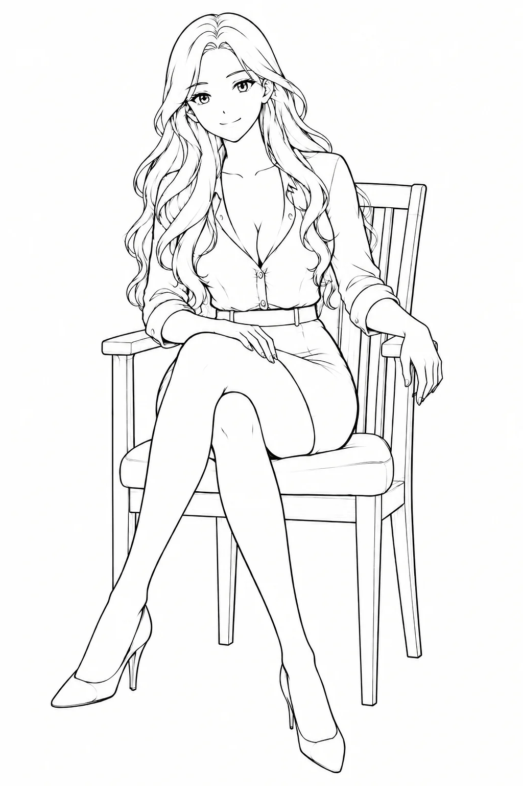

让 Agent
成为数字员工
不是再造一个什么都能聊的智能体，而是把每一项工作，交给一个有岗位、有记忆、有边界、能长期在岗的人。

Agent 很强，为什么还是像“临时工”？
今天的 Claude Code、DeepSeek Harness、Codex 以及各种 Work 产品，已经足够强大。它们能读代码、改文件、跑命令、调用工具，甚至可以自己完成一整段复杂工作。
但它们往往有一个共同的前提：一份工作区，一份上下文，一份记忆。当你换了一台电脑，换了一个仓库，换了一个工作目录，原本好不容易教会 Agent 的工作习惯、交付格式、判断边界，常常也跟着散掉了。
于是我们会不断重复同一件事：重新解释背景，重新粘贴规则，重新告诉它“这类任务应该怎么做”。Agent 本身没有变笨，变的是它没有一个稳定的“岗位”。
一个数字员工，不是一段对话，而是一个工作区
DSEmployee 没有试图把所有能力塞进一个“万能智能体”。它选择了一种更接近真实组织的方式：给每一类工作分配一个专职员工。
员工身份跟着目录走
一个员工对应一个 dsh 工作区。岗位说明、知识库、专属技能、模型端点、会话与头像，都围绕这个工作区组织。把目录带到另一台机器，员工还是原来的员工。
一个人，也可以有自己的部门
你可以有一个负责周报的小艾，一个负责资料检索的阿澈，一个负责代码维护的工程师，一个负责每日汇报的秘书。每个人只承担一类责任，提示词、技能和交付方式都能沉淀下来。

运营组 · 周报整理、数据核对
这件事的价值并不只是“看起来像公司”。当角色边界被固定下来，Agent 才有机会从一次性工具，变成可以被信任、被复用、被协作的生产力单元。对一人公司来说，这种差别很大：你不再是每次都亲自带一个实习生，而是在慢慢搭建自己的团队。
一台 Hub，多个节点：随时做与随地做可以分开
很多任务并不需要等你坐到电脑前才开始。资料整理、定时汇报、后台巡检、周期性分析，可以放在家里的电脑或服务器上长期运行；需要你随时介入的任务，则可以放在手边的笔记本上。
从同一个入口发起任务
各自承载本机 dsh 与员工
这套架构的好处，是把“员工在哪里运行”和“你从哪里指挥”解耦。Hub 不需要反向打穿每台终端，终端主动出站连接 Hub；员工继续在本机工作区里跑，文件和工具仍然留在它真正需要的地方。
而控制台本身就是一个 PWA：手机浏览器可以添加到主屏幕，打开后像一个独立应用。你可以在通勤路上看状态、处理审批、给员工发下一步指令，也可以在电脑上进入完整的办公区继续工作。
它把“管理 Agent”做成了一个有现场感的办公区
如果所有 Agent 都只是一个输入框，长期使用很容易变成一堆互相混淆的会话。DSEmployee 的界面选择了另一条路：让每个员工有一个工位，让状态变得一眼可见。
小艾
正在核对本周数据
 知衡
在线，等待任务
知衡
在线，等待任务
 小张
代码维护 · 公司 Mac
小张
代码维护 · 公司 Mac
头像可以自己捏
默认有像素风头像，也可以上传自己的 PNG、WebP、GIF 或 JPEG，让员工从“一个 ID”变成团队里有名字、有性格的同事。
状态不是黑盒
办公区、全景页、忙碌徽章、未读角标和实时输出，让你知道员工是在工作、等待、离线，还是卡在需要你处理的步骤。
定时任务
把周期性工作交给员工，按间隔自动执行。下一次运行、启用状态和离线情况，都能在同一个工作台查看。
员工可以互相协作
员工之间支持受控互调。需要确认的动作进入审批中心，决定权仍然在你手里，而不是藏在一段不可见的自动化里。
秘书页与工作台
部分岗位可以有更专属的界面：立绘、对话、目标、下一步和最近结论放在一起，适合长期陪伴式的工作流程。
体检视图
控制台脚本、节点代码、工作区锚点等“不会报错但会变坏”的问题，会被主动摆出来，减少隐性失效。
安全不是“我们很安全”，而是一组明确的闸门
数字员工一旦能够读文件、执行命令、跨设备工作，安全就不能只依赖用户“自己小心”。DSEmployee 的思路是把授权、边界和异常处理做成产品的一部分。
- ✓设备先授权，再进入系统
浏览器生成 Ed25519 设备身份，新设备通过一次性配对码或已授权设备审批；不用时可以关闭“新设备注册”，开关默认自动收回。
- ✓权限按设备和方法收敛
设备令牌只保存摘要，方法按 scope 校验；员工之间互调有 ACL，命中需要确认的规则就进入审批中心。
- ✓dsh 不直接暴露到网络
dsh 只监听回环地址，由同机节点代理驱动；外部访问统一收敛到 Hub，减少把本地 Agent API 暴露出去的风险。
- ✓凭据留在应该留的地方
员工级 LLM API Key 只在终端节点本地落盘，接口只回传掩码；来自网络的工作区路径也会经过边界检查。
- ✓离线与重复执行有处理策略
节点离线时，对话指令可以进入 Hub 邮箱等待重连；带副作用的方法要求幂等键，避免网络重试造成重复动作。
如果你已经开始想“给这件事配一个人”，它就值得试试
你不缺一个聊天机器人，你缺的是几个能各自负责一摊工作的同事：运营、研究、内容、代码、秘书。DSEmployee 让这些岗位可以被命名、被复用、被调度。
你已经在使用 Claude Code、Codex 或 dsh，只是厌倦了反复搬运上下文。把常用工作流沉淀成独立员工之后，换仓库、换电脑、换任务，不必从零教起。
有一台常开的 Mac、Windows 主机或云服务器，希望让周期任务持续跑；又希望在手机或笔记本上随时接管。Hub + 节点正好把这两种需求分开。
你希望自动化能做事，但不希望任何一个 Agent 无限制地调用另一个 Agent、访问整台机器或把凭据散出去。DSEmployee 的价值，在于它把“允许什么”变成可以审核的规则。
从“我有几个 Agent”，走向“我有一家公司”
我很喜欢 DSEmployee 的一点，是它没有把重点放在“再做一个更全能的智能体”。它更像是在回答另一个问题：当 Agent 越来越能干，我们怎样让它们稳定地成为团队的一部分？
答案不是让一个智能体记住所有事情，而是让不同的数字员工各自拥有自己的岗位、工作区、技能、设备和边界。它们可以在家里的机器上持续工作，也可以被你从手机上随时叫醒；可以有自己的头像和工位，也可以在需要时停下来等你审批。
这就是 DSEmployee 想做的事：把 AI 从一次性对话，推向长期协作；把单机 Agent，推向一个真正可管理的数字员工团队。
查看项目说明与快速开始